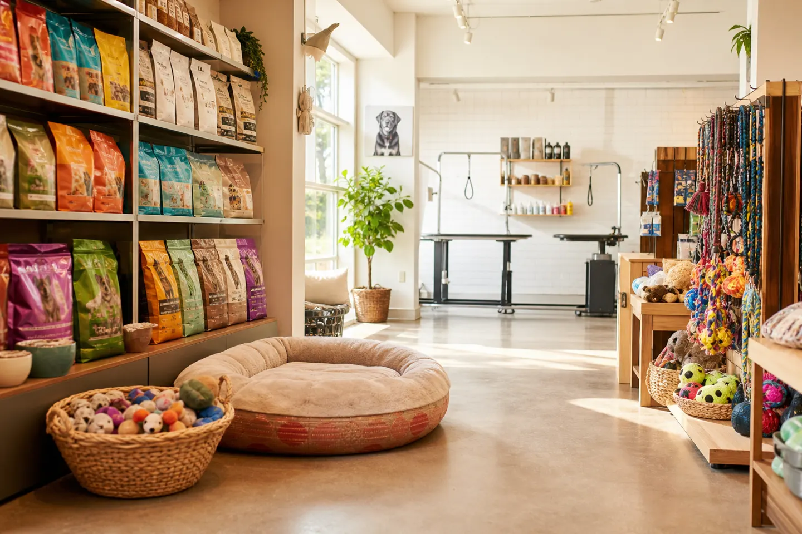

Cuidado e carinho para seu pet em Goiânia
Pet shop no Res. Vereda dos Buritis com variedade de rações, brinquedos e serviço de banho. Atendimento atencioso e produtos de qualidade.
O Empório Dos Animais é um pet shop localizado na R. Vb 26, 86 - Res. Vereda dos Buritis, em Goiânia. Com nota 4,5 e 157 avaliações no Google, oferecemos variedade de rações, brinquedos e serviço de banho. Nossos clientes destacam os preços bons, atendentes atenciosos e produtos de qualidade.
Serviço de banho para seu pet com qualidade e cuidado
Variedade de rações para todas as necessidades do seu animal
Diversas opções de brinquedos para entreter seu pet
Seleção de produtos de qualidade para cuidar do seu animal
Serviço de entrega disponível para sua comodidade
Trechos de avaliações públicas no Google · nota 4,5 (157 avaliações)
★★★★★“Sempre compro ração com eles, muito bom mesmo, as vezes ainda mandam um brinde 🤩”
★★★★★“Já sou cliente a um tempo e recomendo muito! Meu cachorro fica muito feliz quando toma banho na empório, só de escutar a buzina da moto já corre com o rabo abanando …”
★★★★★“Muito bom. Ele deu banho minha cadela e meu cachorro. Ficou excelente.”
| domingo | Fechado |
| segunda-feira | 08:00–19:00 |
| terça-feira | 08:00–19:00 |
| quarta-feira | 08:00–19:00 |
| quinta-feira | 08:00–19:00 |
| sexta-feira | 08:00–19:00 |
| sábado | 08:00–14:00 |
Conforme Google Maps; confirme feriados pelo WhatsApp.
R. Vb 26, 86 - qd23 - Res. Vereda dos Buritis, Goiânia - GO
WhatsApp: +55 62 98450-8798